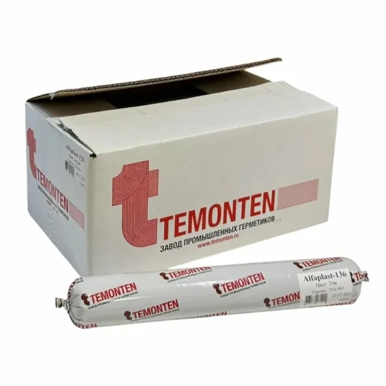
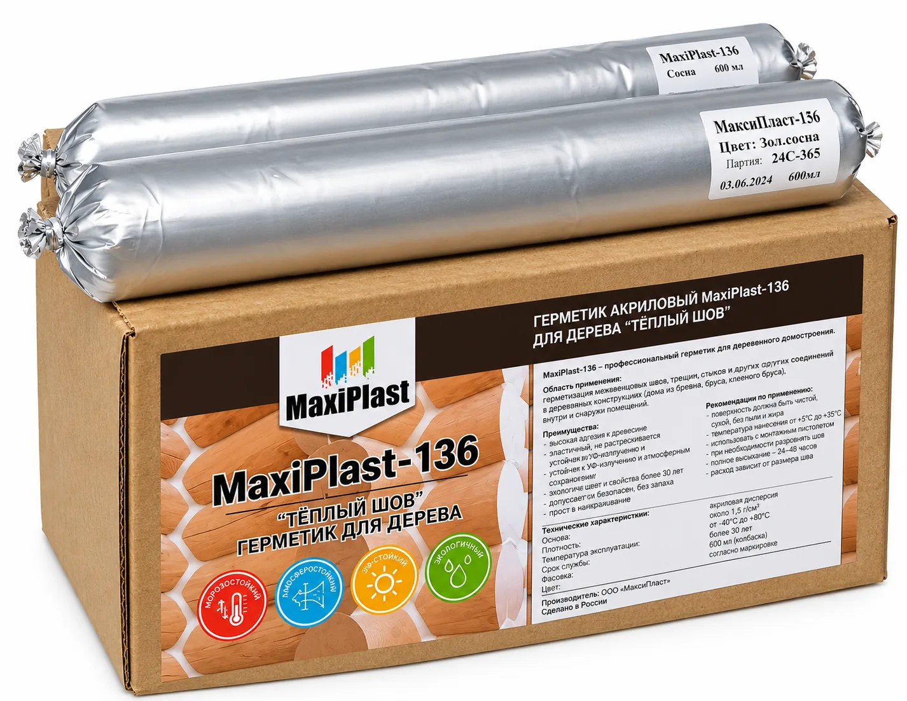
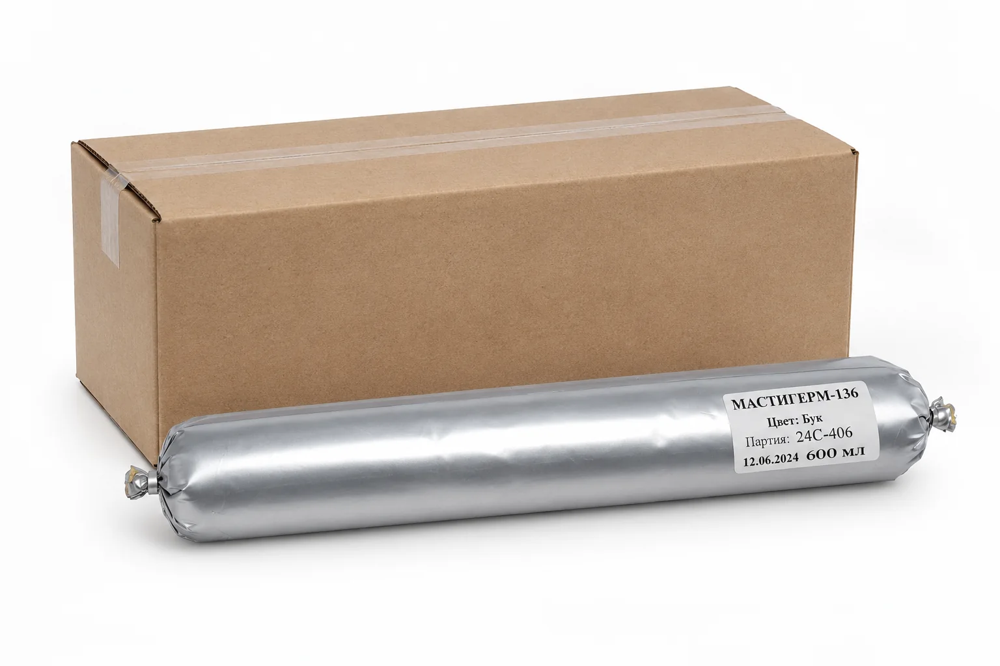
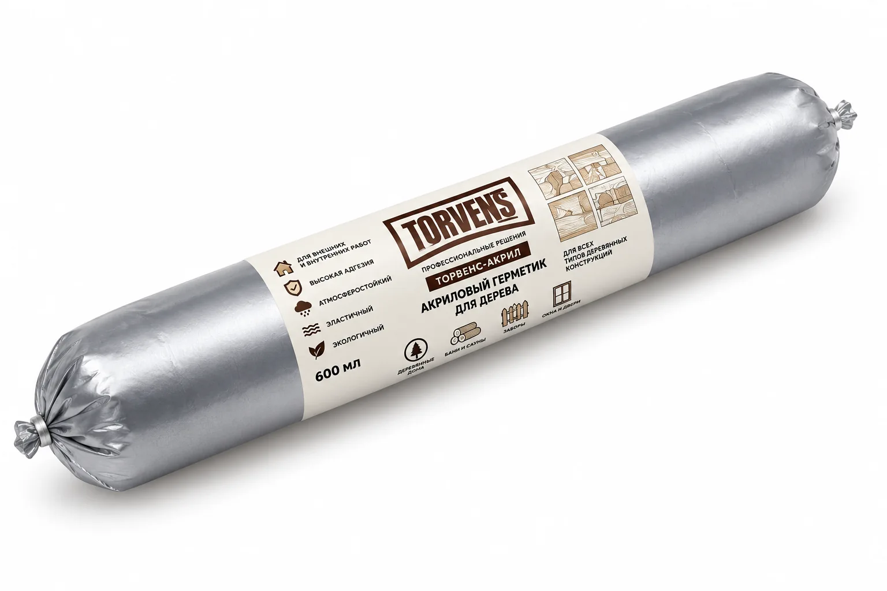
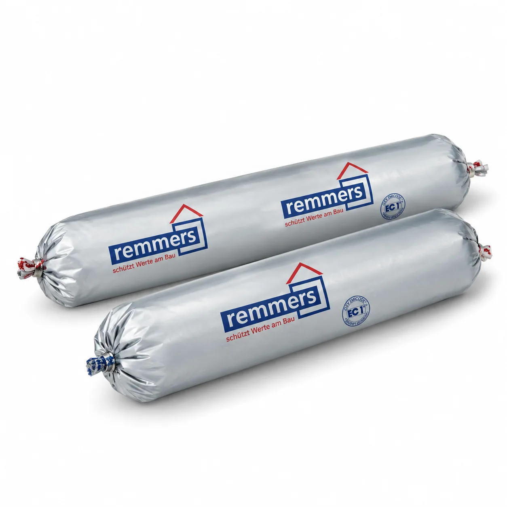
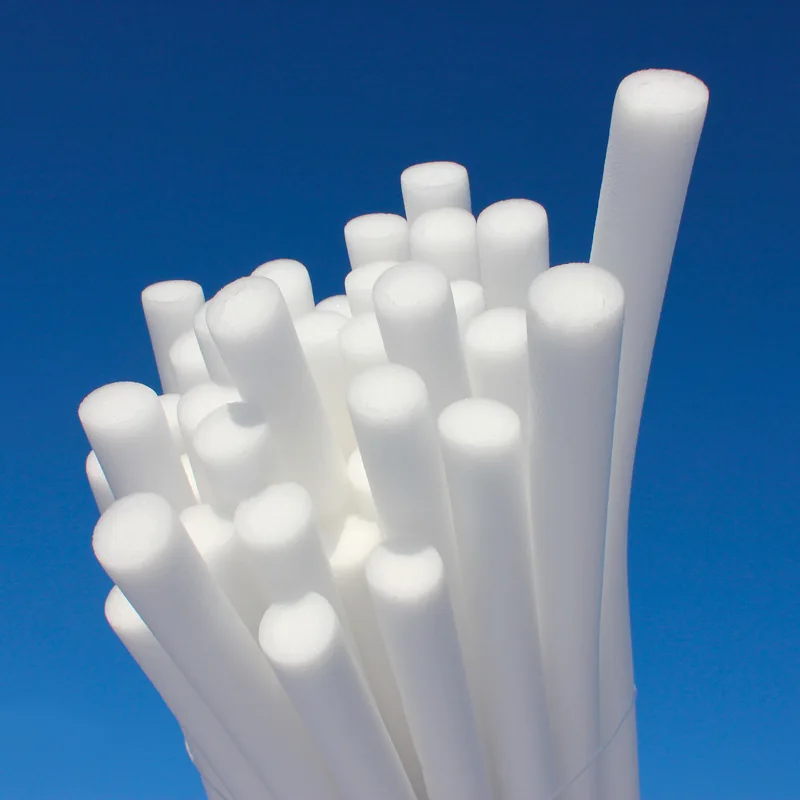

Щели между венцами и в стыках бруса могут пропускать воздух, влагу и уличный холод. Технология «тёплый шов» помогает закрыть такие соединения эластичным материалом, сохраняя аккуратный вид деревянных стен. Чтобы результат был долговечным, важно оценить состояние древесины, подобрать совместимые герметик и уплотнительный шнур, а затем соблюдать инструкции именно к выбранной продукции. Ниже — практический порядок действий и критерии выбора без предположений о свойствах конкретной партии или универсальных нормах расхода.
Что такое тёплый шов и зачем он нужен
Тёплый шов — способ герметизации соединений деревянных конструкций, при котором зазор заполняют уплотнительным материалом, а снаружи формируют эластичный герметизирующий слой. В качестве заполнителя часто используют Вилатерм — вспененный полиэтиленовый шнур. Он занимает часть глубины шва и помогает сформировать основание для нанесения герметика. Сам герметик закрывает стык от продувания и прямого попадания воды при соблюдении требований производителя к подготовке и устройству соединения.
В отличие от простого заполнения щели, система рассчитана на то, что деревянные элементы могут менять размеры и положение при сезонных колебаниях влажности и температуры. Поэтому герметик для деревянного дома выбирают с учётом подвижности шва, сцепления с основанием и условий эксплуатации. Тёплый шов не исправляет конструктивные дефекты стены и не заменяет утепление там, где оно предусмотрено проектом. Это отделочная и герметизирующая мера для стыков, а не универсальный способ устранить любую причину холода.
Почему появляются щели и теплопотери
Древесина — природный материал, способный отдавать и набирать влагу. В процессе высыхания и сезонных изменений её размеры могут изменяться. На геометрию соединений также влияют качество подгонки элементов, равномерность усадки, нагрузка от конструкции, состояние межвенцового утеплителя и особенности эксплуатации дома. В результате по швам могут образоваться локальные зазоры, а старый заполнитель — сместиться, уплотниться или утратить целостность. Даже небольшой непрерывный участок неплотного соединения способен стать заметным источником сквозняка.
Не всякая щель требует немедленного нанесения герметика. Сначала выясняют, где именно проходит воздух и нет ли более серьёзной причины: движения конструкции, повреждения древесины, протечки или неправильно выполненного узла. Осмотрите швы снаружи и изнутри, уделите внимание углам, стыкам элементов и участкам вокруг проёмов. Если проблема связана с конструктивным смещением или разрушением дерева, косметическая герметизация может скрыть симптом, но не устранит причину. При сомнениях сначала нужен осмотр специалиста по деревянным конструкциям.
Как выбрать герметик для бруса и сруба
Подходящий герметик для бруса или сруба выбирают не только по цвету и цене. Сверьте маркировку и актуальную техническую документацию: продукт должен быть предназначен для древесины и для того типа соединения, который требуется обработать. Важно проверить допустимые условия нанесения, требования к состоянию поверхности, диапазон температур при работе и эксплуатации, рекомендации по грунтованию, совместимость с уплотнительным шнуром и отделочными покрытиями. Эти сведения могут отличаться у разных продуктов, поэтому ориентироваться на общее название категории недостаточно.
До покупки определите, где будет выполнена герметизация: внутри или снаружи, в новом доме или при ремонте старого, в межвенцовом шве или в другом узле. Уточните ширину и глубину зазора, состояние краёв, наличие старой краски и требуемый внешний вид. Если поверхности будут окрашиваться, выясните, совместимы ли покрытие и герметик и в каком порядке их наносить. Цвет стоит подбирать по образцу на конкретной древесине: оттенок на экране и на упаковке не всегда точно передаёт будущий вид шва.
Для деревянного дома особенно важны эластичность после отверждения и способность сохранять сцепление с подготовленной поверхностью при предусмотренных производителем подвижках шва. Не следует считать взаимозаменяемыми все составы, на упаковке которых указана герметизация. Материалы для санитарных, оконных или общестроительных швов могут быть рассчитаны на другие основания и условия. Если характеристики не указаны в карточке товара, запросите техническое описание у продавца или производителя, а не делайте вывод по одному рекламному обещанию.
- назначение для древесины;
- применимость для наружных или внутренних работ;
- требования к влажности и чистоте основания;
- рекомендованная геометрия шва;
- совместимость с Вилатермом и последующей отделкой;
- время и условия нанесения.
Сохраните упаковку и инструкцию до завершения работ — они нужны для контроля расхода, подготовки и выдержки.
Продукция: Альфапласт-136, Максипласт-136, Мастигерм-136, Torvens и Remmers
При выборе можно рассматривать Альфапласт-136, Максипласт-136, Мастигерм-136, Torvens и Remmers. Само название линейки не заменяет проверку назначения конкретного состава: ассортимент, фасовка, цвета и актуальные рекомендации могут меняться. Ниже приведён нейтральный ориентир для сравнения, а не рейтинг и не заявление о равных характеристиках. Перед заказом сопоставьте техническое описание нужного продукта с параметрами вашего шва и условиями проведения работ.

Альфапласт-136
Проверьте назначение для деревянных швов, подготовку поверхности, допустимую геометрию и условия нанесения.
Подробнее о товаре →
Максипласт-136
Уточните актуальные рекомендации, доступные цвета и совместимость с заполнителем и отделкой.
Подробнее о товаре →
Мастигерм-136
Проверьте, для каких деревянных оснований и работ предназначен конкретный вариант.
Подробнее о товаре →
Torvens
Сверьте точное наименование продукта, область применения и требования к основанию.
Подробнее о продукции →
Remmers
Уточните конкретный продукт линейки, схему формирования шва и допустимые условия работ.
Подробнее о продукции →
Вилатерм
Уплотнительный шнур для формирования основания шва. Диаметр подбирают по геометрии зазора.
Подобрать Вилатерм →Если сравниваете несколько вариантов, попросите продавца указать конкретное название, фасовку и ссылку или копию действующего технического описания. Сравнивайте продукты по одинаковым критериям: допустимые основания, шов, условия работы, порядок подготовки, совместимые материалы и способ расчёта расхода. Нельзя автоматически переносить данные одного состава на другой продукт того же бренда или на похожее название. При ремонте старого дома сначала проверьте сцепление выбранного материала с существующей древесиной и остатками покрытия на небольшом незаметном участке.
Для чего нужен Вилатерм и как подобрать диаметр
Вилатерм — уплотнительный шнур, который используют как подкладку в шве. Он уменьшает объём герметика, помогает задать глубину заполнения и формирует основание, к которому герметик не должен прилипать там, где нужна свободная деформация. Конкретная схема зависит от инструкции к герметику и геометрии узла. Шнур не заменяет наружный герметизирующий слой и не должен применяться вместо устранения провала, разрушенного дерева или недостаточного межвенцового заполнения.
Диаметр подбирают по фактической ширине и глубине зазора, а не только по размеру, указанному в названии детали. Шнур должен удерживаться в соединении и устанавливаться без чрезмерного растяжения, раздавливания или повреждения поверхности. Не проталкивайте слишком крупный Вилатерм острым инструментом: прокол или надрыв может ухудшить равномерность основания. Слишком тонкий шнур может сместиться или не обеспечить нужную форму шва. Рекомендованную степень обжатия и глубину установки уточняйте в инструкции к выбранному герметику; универсальное значение здесь указывать нельзя.
Простой порядок подбора
- Измерьте ширину и глубину шва в нескольких местах, поскольку зазор может меняться по длине стены.
- Сверьте измерения с рекомендациями производителя герметика по применению уплотнительного шнура и форме шва.
- Подберите диаметр, который можно уложить непрерывно, не растягивая и не повреждая материал, и проверьте решение на коротком участке.
- Если геометрия непостоянна, предусмотрите несколько подходящих размеров либо согласуйте узел с производителем материала или специалистом.
Этапы герметизации деревянного дома
1. Осмотр и подготовка поверхности
До начала работ определите границы участка и оцените состояние древесины. Удалите пыль, рыхлые загрязнения, отслоившуюся краску и остатки старого герметика настолько, насколько это требуется инструкцией и состоянием основания. Работайте аккуратно, чтобы не повредить кромки и не углубить дефекты. Если обнаружены гниль, следы постоянного намокания, насекомые или подвижность соединения, сначала выясните причину и выполните необходимый ремонт. Наносить новый материал поверх непрочного слоя — ненадёжное основание.
Поверхность должна соответствовать требованиям производителя по чистоте и состоянию. Не следует считать, что любое влажное дерево допустимо для нанесения или, наоборот, что достаточно дождаться произвольного количества дней после дождя: проверьте инструкцию к конкретному составу и фактическое состояние древесины. Защитите смежные участки, если важно получить ровную границу. На старом покрытии и на древесине с неизвестной пропиткой сделайте пробу сцепления. Работайте в подходящих средствах защиты, соблюдая указания на упаковке.
2. Укладка Вилатерма
После очистки аккуратно уложите Вилатерм на требуемую глубину. Удобнее продвигаться последовательно по шву, избегая пропусков, разрывов и резких изменений уровня. Не вытягивайте шнур и не проталкивайте его способом, который повреждает поверхность. В углах и местах пересечения стыков уделите внимание непрерывности заполнения и соблюдению схемы, рекомендованной для узла. Если шнур не держится или зазор слишком неровный, остановитесь и скорректируйте подбор размера либо подготовку, вместо того чтобы компенсировать проблему толстым слоем герметика.
3. Нанесение и формирование герметика
Наносите герметик способом, предусмотренным для выбранной упаковки, непрерывно и равномерно, контролируя заполнение без незаполненных полостей. Затем сформируйте поверхность шва инструментом или способом, который допускает изготовитель. Важно обеспечить сцепление с подготовленными боковыми поверхностями, не загрязняя древесину и не смещая Вилатерм. Если используется малярная лента, снимайте её в подходящий момент, чтобы край оставался аккуратным. Не разбавляйте и не смешивайте составы по собственной инициативе.
После нанесения защитите свежий шов от условий, которые производитель считает неблагоприятными, и выдержите указанное время до контакта с влагой, окраски или дальнейших работ. Значения зависят от конкретного состава и условий на объекте, поэтому не ориентируйтесь на усреднённый совет из интернета. Перед обработкой всего дома сделайте пробный участок и оцените качество нанесения, внешний вид и сочетаемость материалов. Фиксируйте, какой продукт и цвет использованы, чтобы при последующем ремонте подобрать совместимый материал.
Типичные ошибки при выполнении тёплого шва
- Нанесение на грязную, рыхлую или отслаивающуюся поверхность. В этом случае герметик сцепляется не с прочной древесиной, а с ненадёжным слоем.
- Выбор продукта только по цене, цвету или названию бренда без проверки назначения и инструкции.
- Неправильно подобранный Вилатерм: шнур выпадает, повреждается при укладке или не соответствует геометрии шва.
- Попытка заполнить чрезмерно глубокий зазор одним герметиком вместо применения подходящего заполнителя и корректного ремонта узла.
- Пропуски, разрывы и неодинаковая толщина слоя, из-за которых шов выглядит неровно и может хуже выполнять свою задачу.
- Работы при неподходящих условиях или нанесение покрытия до срока, указанного в инструкции.
- Попытка скрыть герметиком гниль, протечку, подвижность конструкции или другую причину повреждения.
Чтобы снизить риск ошибок, начните с небольшого участка, проверьте, как ведут себя герметик и шнур, и только затем переходите к стенам целиком. Не смешивайте продукты разных типов и производителей в одном узле без подтверждения совместимости. Если поверхность сильно разрушена или шов имеет нестандартную форму, безопаснее получить техническую рекомендацию по конкретному месту, чем увеличивать толщину слоя на глаз.
Как рассчитать количество герметика и Вилатерма
Для предварительного расчёта измерьте общую длину швов, которые планируете обработать. Разделите стену на понятные участки, отдельно учтите углы и примыкания, затем сложите длины. Не включайте отрезки, которые не будут герметизироваться, и не забывайте, что фактическая длина может отличаться от проектной из-за особенностей сборки. Для Вилатерма ориентируйтесь на суммарную длину подготовленных зазоров и выбранный размер шнура; небольшой запас на подрезку и сложные места определяйте по реальному состоянию объекта.
Расход герметика нельзя надёжно назвать без данных о ширине и глубине шва, его форме и инструкции конкретного продукта. Если производитель приводит таблицу или метод расчёта, используйте именно её. При неодинаковой геометрии измерьте несколько характерных участков и рассчитайте каждый отдельно, а затем сложите результаты. Для проверки можно выполнить пробный отрезок известной длины и сопоставить фактическое использование материала с рекомендациями производителя. Такой пробный участок не заменяет паспортные данные, но помогает точнее спланировать закупку на объекте.
Перед заказом составьте перечень: длина швов, ориентировочная ширина и глубина каждого типа соединения, число углов и примыканий, выбранный диаметр Вилатерма, вид упаковки герметика и цвет. Уточните у продавца, можно ли приобрести недостающее количество той же партии или оттенка, если это важно для внешнего вида. Не закупайте материалы по одной усреднённой норме для всех стен: расход может меняться из-за профиля бруса, неодинаковых зазоров, потерь при нанесении и способа формирования шва.
FAQ: частые вопросы покупателей
Можно ли выполнять тёплый шов в новом деревянном доме?
Это зависит от состояния и этапа усадки конструкции, требований проекта и инструкции к герметику. До начала работ оцените стабильность соединений и убедитесь, что выбранный материал предназначен для ожидаемых условий и подвижек. Если дом ещё проходит значительные изменения геометрии, сроки и технологию работ лучше согласовать со специалистом и производителем состава.
Можно ли наносить герметик поверх старого шва?
Только если основание прочное, старый материал совместим с новым и производитель допускает такое нанесение. Отслаивающиеся, загрязнённые или повреждённые участки обычно требуют удаления или подготовки. Сделайте пробу на небольшом отрезке и проверьте сцепление. Если неизвестен тип старого покрытия, не закрывайте его новым слоем без проверки совместимости.
Нужен ли Вилатерм в каждом шве?
Не во всех случаях можно дать одинаковый ответ: необходимость и размер шнура определяются конструкцией шва и инструкцией к герметику. Вилатерм применяют как уплотнительную подкладку, когда это предусмотрено выбранной системой. Для узкого или особого по форме соединения может быть рекомендовано другое решение. Сначала изучите требования к узлу, затем подбирайте комплект материалов.
Какой герметик лучше для бруса и сруба?
Универсального ответа без сведений об объекте нет. Сравните предназначение конкретного продукта, допустимую геометрию шва, условия нанесения и требования к древесине. Для герметика для сруба и герметика для бруса важны не только марка и цвет, но и соответствие конкретному соединению. При сомнениях сообщите продавцу размеры шва, место работ и состояние покрытия.
Можно ли покрасить или покрыть маслом герметизированную стену?
Это зависит от совместимости герметика с выбранной краской или маслом и от последовательности нанесения. Проверьте технические рекомендации для обоих материалов и при необходимости сделайте пробу на малозаметном участке. Не наносите отделку до завершения выдержки, указанной производителем герметика. Если важно сохранить единый цвет древесины и шва, заранее согласуйте выбранную систему отделки.
Материалы для деревянного дома в TatStroyDom
TatStroyDom предлагает материалы для герметизации и ухода за древесиной: герметики, Вилатерм, шлифовальные диски, масла и краски для дерева. Помогаем подобрать продукцию под конкретную задачу — с учётом типа конструкции, размеров шва, условий работ и планируемой отделки.
Чтобы получить практичную рекомендацию, подготовьте фотографии участка, примерные размеры зазора и сведения о старом покрытии; точный подбор всё равно следует сверять с документацией выбранного продукта.